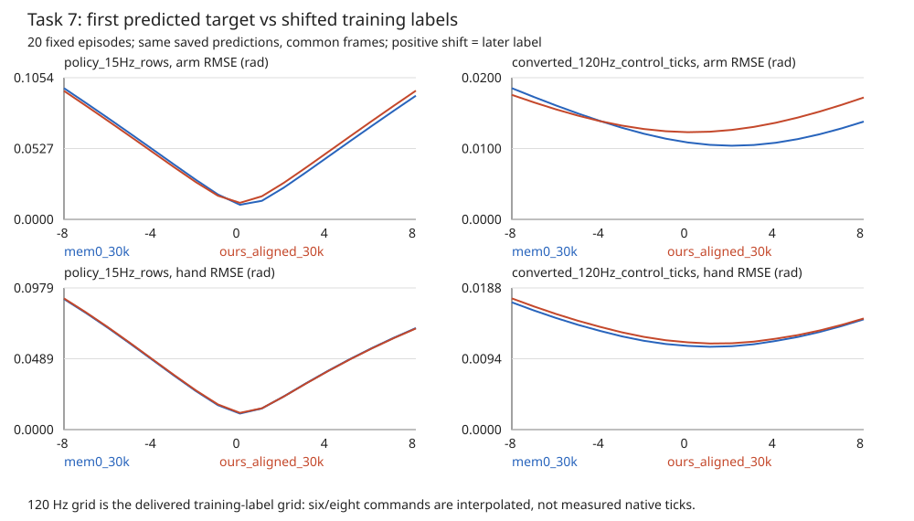

2026-11-06T16:49:26.074292+00:00。原v1.1主表seed0的5/100与7/100保持不变；以下按配置独立报告，追加seed3/4继续运行。
原生120Hz日志完整SHA验证698/700（历史199份＋新增499份），2条基础设施unknown保留在分母。新499条离线v1.1与原SDK逐条一致。v1.1/v1.2统计7个有序阶段；v1.3统计4个不同杯在秤盘上有实测支撑接触，手接触可保留，纯高度接近不能得分。两个物理布局均来自训练初态，无位置抖动；100场景不是100个随机布局。
| 方法30k | h | seed | v1.1 | v1.2 | v1.3 | v1.1平均阶段 |
|---|---|---|---|---|---|---|
| mem0_30k | 8 | 0 | 5/100 (U0) | 5/100 (U0) | 5/100 (U0) | 2.380 |
| mem0_30k | 8 | 1 | 8/100 (U0) | 8/100 (U0) | 8/100 (U0) | 2.470 |
| mem0_30k | 8 | 2 | 8/100 (U0) | 9/100 (U0) | 9/100 (U0) | 2.760 |
| ours_aligned_30k | 4 | 0 | 10/100 (U0) | 11/100 (U0) | 14/100 (U0) | 2.820 |
| ours_aligned_30k | 8 | 0 | 7/100 (U1) | 11/100 (U6) | 11/100 (U1) | 2.687 |
| ours_aligned_30k | 8 | 1 | 14/100 (U1) | 16/100 (U1) | 17/100 (U1) | 2.899 |
| ours_aligned_30k | 8 | 2 | 9/100 (U0) | 12/100 (U0) | 14/100 (U0) | 2.650 |
h8三seed合计：Mem-0 v1.1=21/300，TTC=30/300（U2）；v1.2=22/300对39/300（TTC U7）；v1.3=22/300对42/300（TTC U2）。TTC−Mem-0的v1.1已知配对成功差约+3.02pp，分层seed/场景bootstrap95%为−3.00～+9.43pp，仍跨0；不能据此宣称显著优势。未知仍保留在各自300分母，已知配对区间不是未知全部轨迹的真实SR区间。
固定ep0–9、50–59，首子任务全部帧及首次切换后30帧；每模型共同8220查询。15Hz标签平移−8至+8，两模型手臂/手部最小RMSE均在0。raw_action是R+1，训练loader interval_end是R+8；所谓7步差是7个物理tick，不是7个策略步。转换120Hz命令标签的小幅1–2tick最优不能证明部署错位；其中含插值，不能冒充缺失的原生实测状态。

曲线CSV · 时序审计JSON · 动作语义与norm SHA
13维绝对弧度、右臂7+右手6、连续手部而非二值化、minmax反归一化统计一致；499份实际SDK映射核对通过。当前K链手部速度前馈为0是执行链设计，未伪称原生前馈一致。原始temporal ensemble保留；时序曲线使用封存raw预测，二者区别已披露。
全部计分、SR@k、Wilson、逐seed/左右拆分、直方图、配对bootstrap与源SHA · 作业与进度快照。strict/FD因放置提前结束被删失的案例保留unknown，不将0个已确认成功写成已知0%真实成功率。旧0.005rad RMSE失败、渲染域残差及精确准入范围均保留，新增诊断不自动扩大正式准入。
MemoryVLA #83交付READY和manifest已读取，chest、16×13、interval_end，仅RGB与global_task且无qpos；尚无该模型闭环成绩。完整500条B结果仍未完成，不能将3×100当作5×100。新变体不覆盖正式主表。